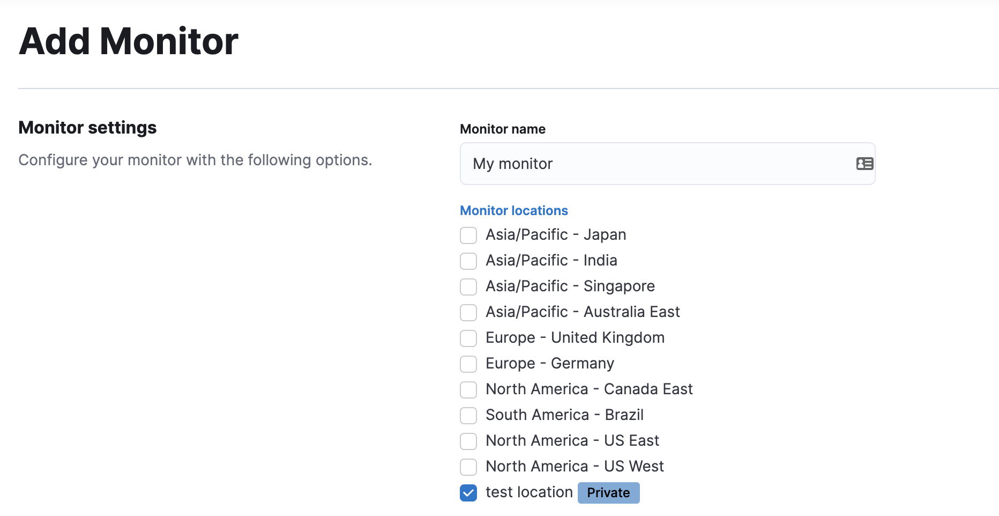

Use the Uptime appedit
This functionality is in beta and is subject to change. The design and code is less mature than official GA features and is being provided as-is with no warranties. Beta features are not subject to the support SLA of official GA features.
You can now create monitors directly in the Uptime app. To try this beta functionality, first you need to enable Monitor Management:
- Go to Observability → Uptime.
- Click Monitor Management.
- Review the terms and conditions and click Enable to start using Monitor Management.
To enable Monitor Management, you must be logged into Kibana as a user with the following privileges:
-
Cluster privileges:
monitor,read_ilm,read_pipeline, and at least one ofmanage_own_api_key,manage_security, ormanage_api_key -
Indices privileges for
synthetics-*:view_index_metadata,create_doc,auto_configure
From here, you can either use Elastic’s global managed testing infrastructure or create a private location to run monitors from your own premises.
Diagram text description
-
Where to start when using the Uptime app depends on whether you are creating a lightweight monitor or browser monitor. It also depends on whether you are using a project to manage journey code.
-
Option 1: For lightweight monitors and browser monitors that are not managed in a project, you can configure a new monitor in Kibana, specifically the Observability Uptime app.
- For browser monitors configured in the Observability Uptime app, you must include Inline journey code, which can be written from scratch or generated using the Synthetics recorder.
-
Option 2: For other browser monitors, create a Project using @elastic/synthetics using
elastic-synthetics init. Then, add journey code and configure monitors usingmonitor.use.
-
-
How you create monitors depends on which option you chose above.
- If you started with Option 1, you’ll use the Kibana UI to select the location while configuring the monitor.
-
If you started with Option 2, you’ll use the Elastic Synthetics library’s
pushcommand. This requires an API key and Kibana URL to authenticate.
-
There are two types of locations you can use.
- Global managed infrastructure
- Private locations
- The monitor will send data to Elasticsearch regardless of its location.
- Kibana, specifically the Observability Uptime app, reads results from Elasticsearch and visualizes those results in the UI.
To use the Elastic Synthetics integration, see the 8.3 documentation. The Elastic Synthetics integration is similar to the Uptime app approach described above, but contains fewer configuration options and does not allow you to run monitors against Elastic’s global managed testing locations.
Use global managed testing infrastructureedit
With Elastic’s global managed testing infrastructure, you can create and run monitors in multiple locations using the Uptime app UI without having to manage your own infrastructure. Elastic takes care of software updates and capacity planning for you.
To add a monitor using Elastic’s global managed testing infrastructure:
- Go to the Monitor Management page.
- Click Add monitor.
- In Monitor locations, select one or more locations.
- Choose a Monitor type and configure the monitor as needed.
- Click Save monitor.
Alternatively, if you are setting up a Browser monitor, you can use Elastic Synthetics push command
to create monitors from a Node.js project that contains one or more synthetic journeys.
See Write a synthetic test for details on writing synthetic tests and
Project monitors for how to create monitors using the push command.
Run a monitor on private locationsedit
Private locations allow you to run monitors from your own premises.
You can run the same monitor both from Elastic’s global managed infrastructure and your private locations to compare results.
Before you create a private location, you need to set up Fleet, and connect an agent to it. Then, you can create a private location in the Uptime app UI. Now, whenever you access the monitor creation page, this private location will appear in the list of locations to which you can deploy monitors.
Set up Fleet Server and Elastic Agentedit
To deploy monitors to private locations, you must complete two prerequisites:
- Set up Fleet Server: If you are using Elastic Cloud, Fleet Server will already be provided and you can skip this step. To learn more, see Fleet.
- Create an agent policy: For more information on agent policies and creating them, see Elastic Agent policy.
A private location should be set up against an agent policy that runs on a single Elastic Agent. Do not run the same agent policy on multiple agents being used for private locations, as you may end up with duplicate or missing tests. Private locations do not currently load balance tests across multiple Elastic Agents.
If there are multiple monitors that need to run from a private location at the same time, up to two will run concurrently on that Elastic Agent. The other monitors will wait until a previous test has finished running and there is capacity, up to a maximum of two at the same time.
Pull the Docker imageedit
Elastic provides Docker images that you can use to run Fleet and an Elastic Agent more easily.
For monitors running on private locations, you must use the elastic-agent-complete
Docker image to create a self-hosted Elastic Agent node. The standard Elastic Cloud or self-hosted
Elastic Agent will not work.
To pull the Docker image run:
docker pull docker.elastic.co/beats/elastic-agent-complete:8.4.3
Connect to the Elastic Stackedit
Before you can create a private location, you must connect Fleet to the Elastic Stack. Then, to enroll an Elastic Agent to Fleet, you’ll need an enrollment token and the URL of the Fleet Server.
You can use the default enrollment token for your policy or create new policies and enrollment tokens as needed.
docker run \
--env FLEET_ENROLL=1 \
--env FLEET_URL={fleet-server-host-url} \
--env FLEET_ENROLLMENT_TOKEN={enrollment-token} \
--cap-add=NET_RAW
--cap-add=SETUID
--rm docker.elastic.co/beats/elastic-agent-complete:8.4.3
The elastic-agent-complete Docker image requires additional capabilities to operate correctly. Ensure
NET_RAW and SETUID are enabled on the container.
For more information on running Elastic Agent with Docker, see Run Elastic Agent in a container and Fleet enrollment tokens.
You may need to set other environment variables. Learn how in Elastic Agent environment variables guide.
Add a private locationedit
To add a new private location:
- Go to Observability → Uptime.
- Click Monitor Management.
- Click Private locations.
- Click Add location.
- Give your new location a unique Location name and select the Agent policy you created above.
- Click Save.
Configure the monitoredit
After you have successfully added a new private location, close the Private locations flyout to return to the Monitor Management page. From there:
- Click Add monitor.
- Give your monitor a unique Monitor name.
-
In Monitor locations, select your new private location, which will appear using the Location name you provided and will have a "Private" badge next to its name.
 - Choose a Monitor type and configure the monitor as needed.
- Click Save monitor.
Alternatively, if you are setting up a Browser monitor, you can use Elastic Synthetics push command
to create monitors from a Node.js project that contains one or more synthetic journeys.
If you are pushing to a private location, you must use an API key generated in 8.4 or higher.
See Write a synthetic test for details on writing synthetic tests and
Project monitors for how to create monitors using the push command.
View in Kibanaedit
Elastic Agent is now sending synthetic monitoring data to the Elastic Stack. Navigate to the Uptime app in Kibana, where you can see screenshots of each run, set up alerts in case of test failures, and more.
If a test does fail (shown as down in the Uptime app), you’ll be able to view the step script that failed,
any errors, and a stack trace.
See Visualize for more information.